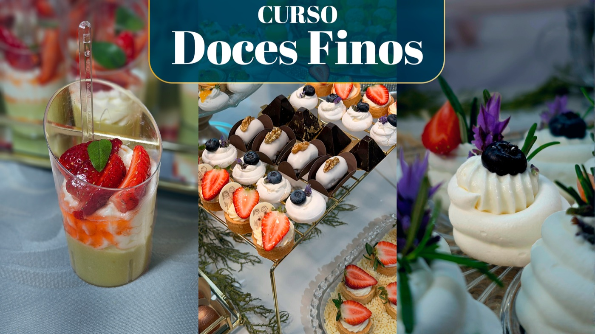
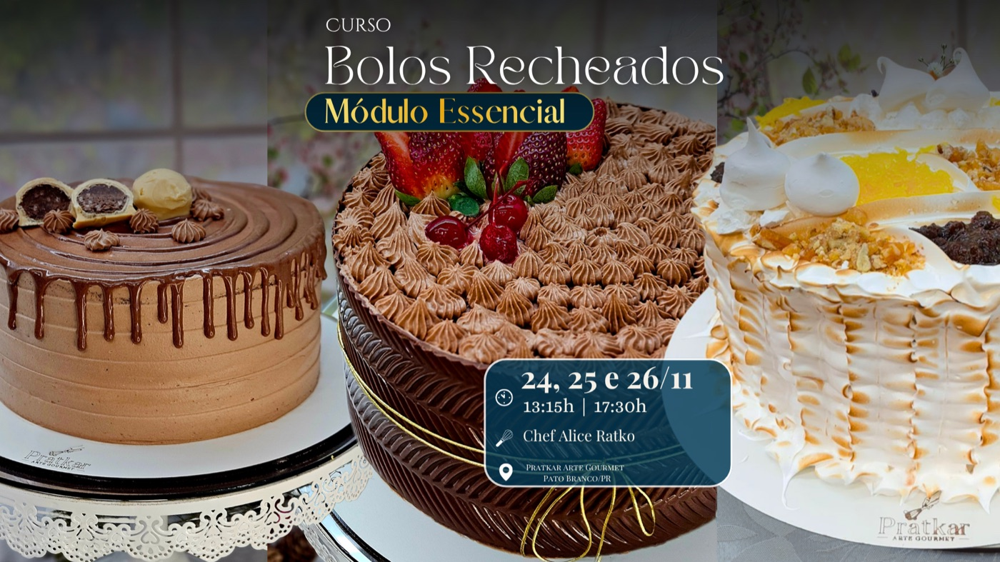
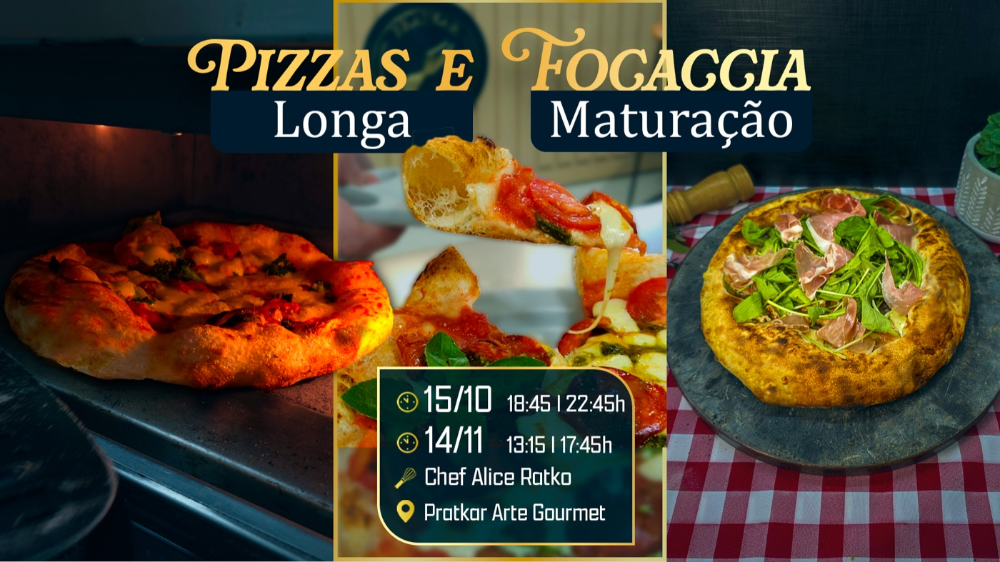
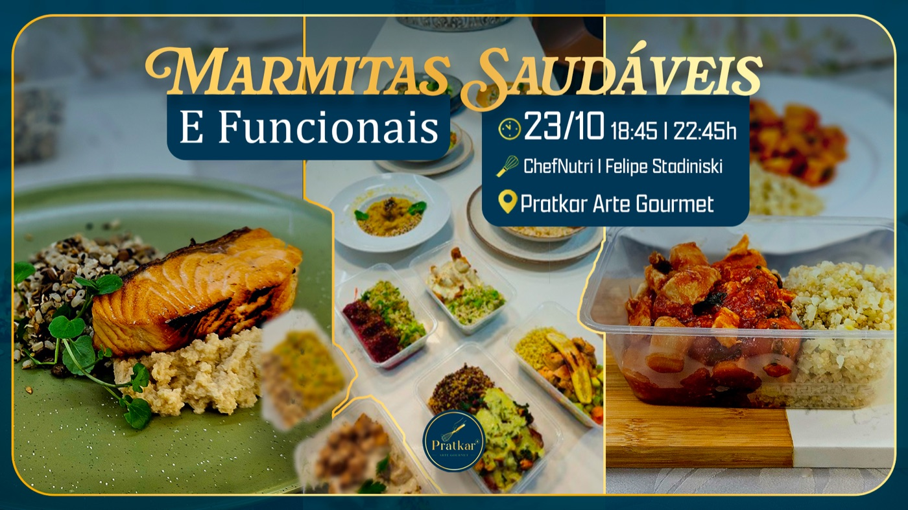
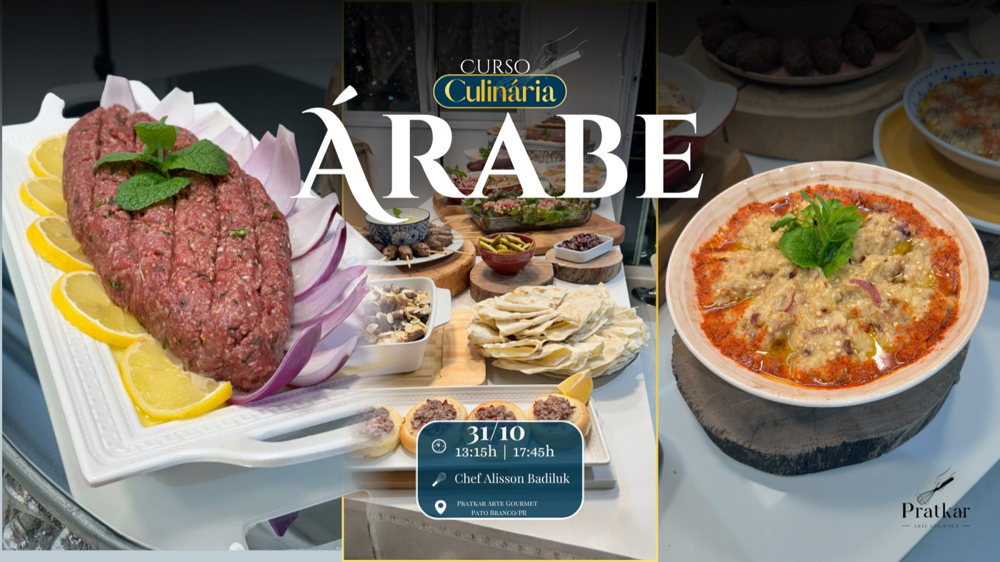
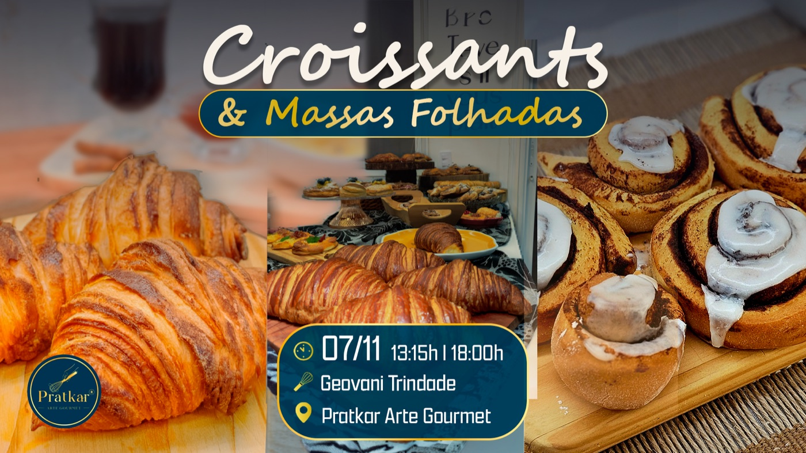
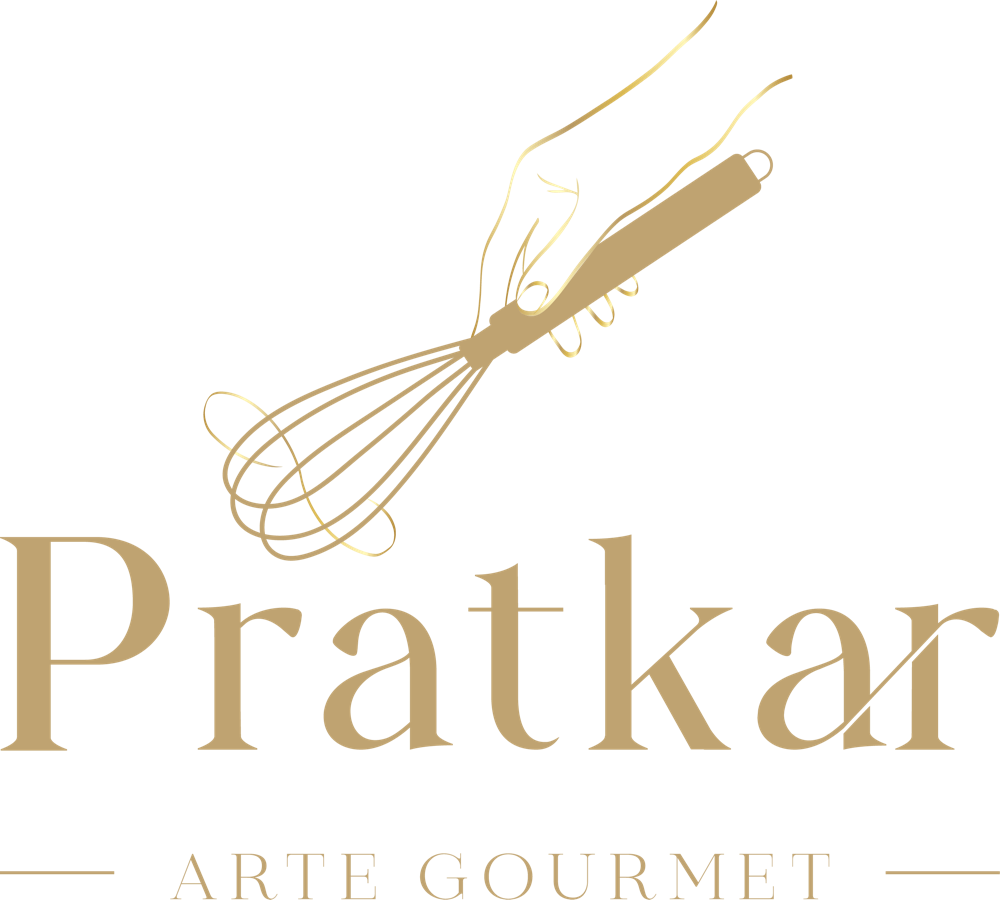

Curso em destaqueDoces finos: uma jornada entre técnica, delicadeza e sabor
Uma experiência prática para aprender preparos elegantes, desenvolver acabamento e entender cada etapa da confeitaria.
Ver detalhes do cursoAgenda, histórias e cultura gastronômica
Pratkar JournalCursos presenciais, novas técnicas e boas histórias para quem acredita que a cozinha também é espaço de encontro.

Curso em destaqueUma experiência prática para aprender preparos elegantes, desenvolver acabamento e entender cada etapa da confeitaria.
Ver detalhes do cursoProgramação
Consulte datas, encontre a experiência certa e fale diretamente com a equipe para reservar sua vaga.
9 experiências encontradas
Agenda atualizada em outubro de 2026Confeitaria
Preparos, texturas e finalizações para criar sobremesas que encantam antes mesmo da primeira colherada.

Confeitaria
Do preparo do biscoito às técnicas de glacê real para criar acabamentos delicados e temas festivos.

Culinária italiana
Fermentação com biga, longa maturação e a técnica para chegar a uma massa leve, saborosa e autêntica.
Confeitaria
Uma experiência doce e elegante para aperfeiçoar técnica, apresentação e combinações de sabores.

Saudáveis
Saúde, sabor e praticidade para transformar a rotina em uma fonte de bem-estar, sem ultraprocessados.
Saudáveis
Massas frescas e molhos cheios de sabor, sem glúten e sem lactose, em uma aula totalmente prática.

Culinária internacional
Uma viagem por sabores, temperos e preparos que fazem da culinária árabe uma mesa de celebração.

Culinária francesa
Técnica, dobras, manteiga e tempo para criar massas leves, crocantes e cheias de camadas.
Confeitaria
Três encontros e doze horas de aprendizado prático sobre massas, recheios, montagem e acabamento.
Tente outro termo ou remova os filtros.
Selecione um curso no calendário para ver os detalhes na agenda.
Leituras para saborear
Técnicas, ingredientes e pequenas histórias para levar a cozinha além da receita.

“Aqui, a gastronomia é celebrada como arte — e vivida como encontro.”
A Pratkar é uma escola de gastronomia em Pato Branco. Um espaço para aprender fazendo, compartilhar experiências e descobrir novos sabores.
Conheça a escolaAgenda no seu celular
Receba novidades sobre cursos, novas datas e conteúdos da Pratkar diretamente pelo WhatsApp.
Receber a agenda